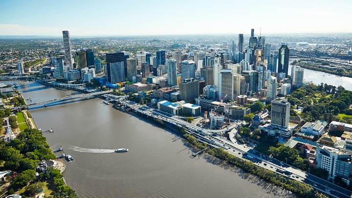
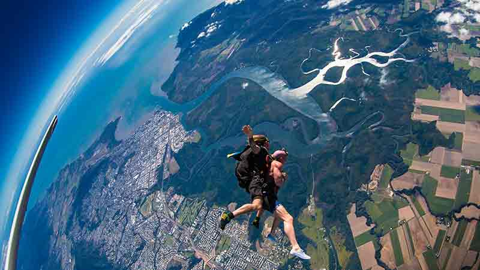
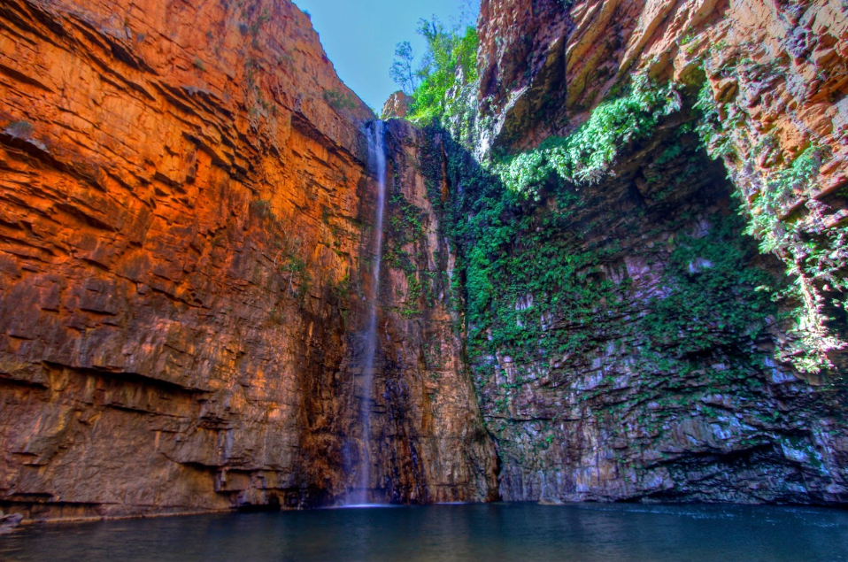

Timeline
-

The journey begins
-

Meeting up with Keenie in Brisbane
Arriving at Brisbane Airport
-
Skydiving in Cairns
Some countdown here.
-

El Questro Wilderness Park - Kununurra
Some countdown here.
-
Bali and The Gili Islands
-
Tester
Mussum ipsum cacilds, vidis litro abertis. Consetis adipiscings elitis. Pra lá , depois divoltis porris, paradis. Paisis, filhis, espiritis santis. Mé faiz elementum girarzis, nisi eros vermeio, in elementis mé pra quem é amistosis quis leo. Manduma pindureta quium dia nois paga. Sapien in monti palavris qui num significa nadis i pareci latim. Interessantiss quisso pudia ce receita de bolis, mais bolis eu num gostis.
-
Tester
M
M -

Meeting up with dad and Asta in Tokyo

Some countdown here.
Mussum ipsum cacilds
Mussum ipsum cacilds, vidis litro abertis. Consetis adipiscings elitis. Pra lá , depois divoltis porris, paradis. Paisis, filhis, espiritis santis. Mé faiz elementum girarzis, nisi eros vermeio, in elementis mé pra quem é amistosis quis leo. Manduma pindureta quium dia nois paga. Sapien in monti palavris qui num significa nadis i pareci latim. Interessantiss quisso pudia ce receita de bolis, mais bolis eu num gostis.
{kind=link}